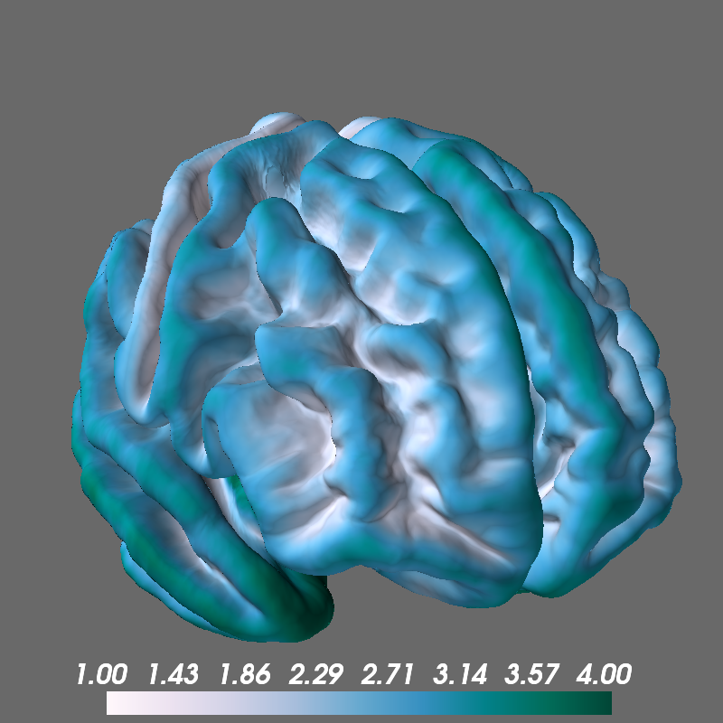

Note
Click here to download the full example code
Overlay Morphometry Data¶
Display morphometry files generated during the cortical reconstruction process.
from surfer import Brain
print(__doc__)
brain = Brain("fsaverage", "both", "pial", views="frontal",
background="dimgray")
"""
Because the morphometry files generated by
recon-all live in a predicatble location,
all you need to call the add_morphometry
method with is the name of the measure you want.
Here, we'll look at cortical curvatuve values,
and plot them for both hemispheres.
"""
brain.add_morphometry("curv")
"""
Each of the possible values is displayed in an
appropriate full-color map, but you can also
display in grayscale. Here we only plot the
left hemisphere.
"""
brain.add_morphometry("sulc", hemi='lh', grayscale=True)
"""
You can also use a custom colormap and tweak its range.
"""
brain.add_morphometry("thickness",
colormap="PuBuGn", min=1, max=4)
Total running time of the script: ( 0 minutes 2.475 seconds)